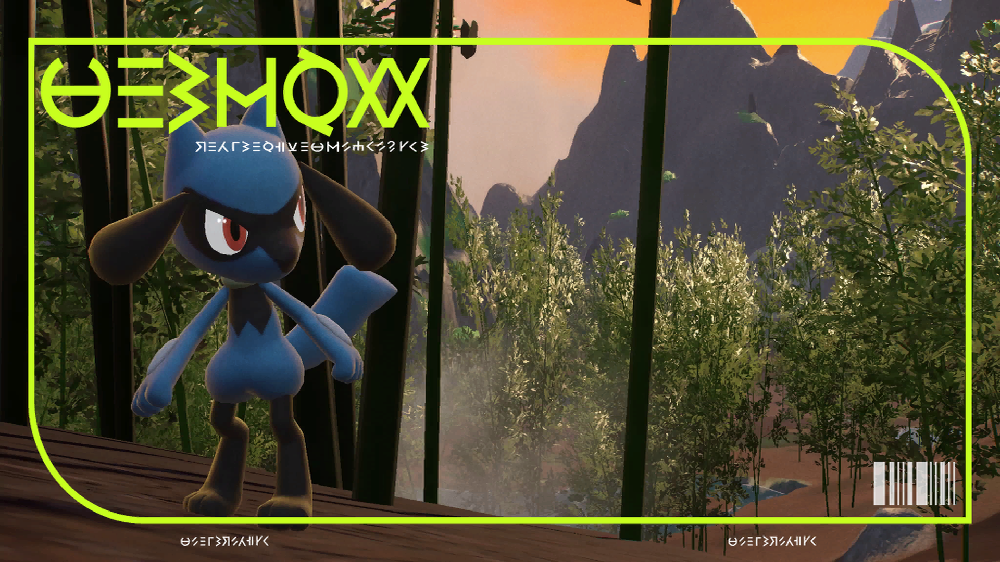
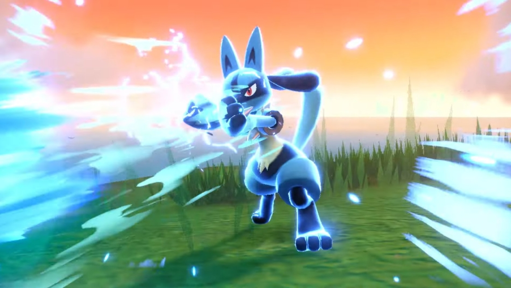
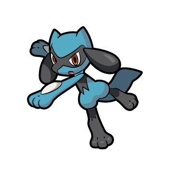
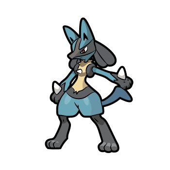
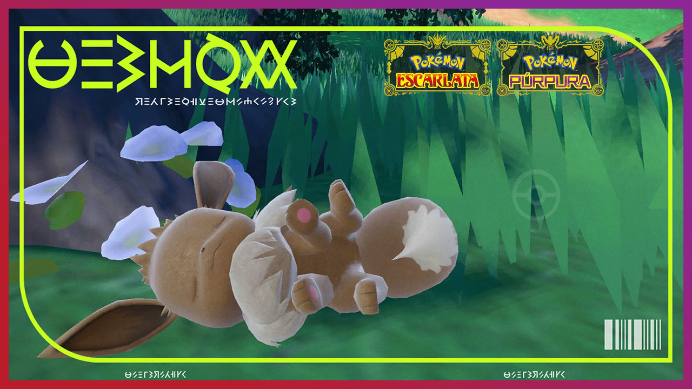
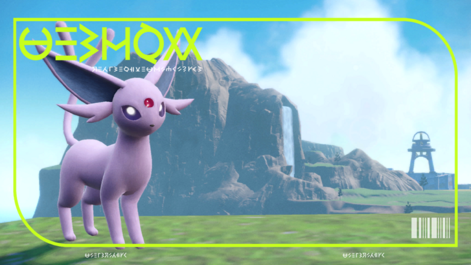
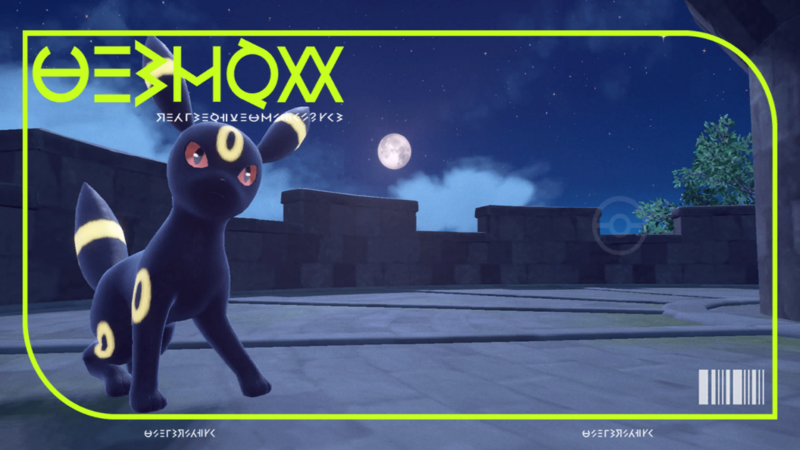
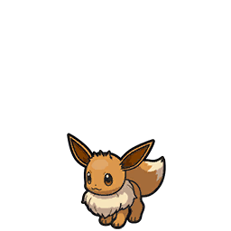
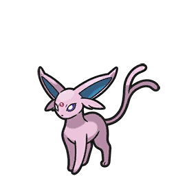
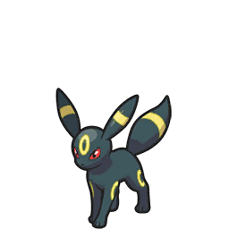

En los nuevos juegos de Pokémon hay distintos pokémon que evolucionan por amistad:
Riolu

Riolu es un Pokémon introducido en 4ª generación y evoluciona al subir un nivel con la amistad al máximo
Lucario

| Pokémon | Requisito | Evolución |
|---|---|---|
|  | == +NV Amistad 270 Día ==> |  |
Eevee

Eevee es un pokémon introducido en la 1ª generación de pokémon. Después de tanto tiempo es nromal que se haya ganado el corazón de todos los fanáticos, actualmente cuenta con 8 evoluciones, más solo dos son por amistad. Para evolucionar a Espeon necesita subir un nivel de día con la amistad al máximo, en el caso de Umbreon necesitará subir un nivel de noche.
Espeon

Umbreon

| Pokémon | Requisito | Evolución |
|---|---|---|
|  | == +NV Amistad 270 Día ==> |  |
| == +NV Amistad 270 Noche ==> |  |